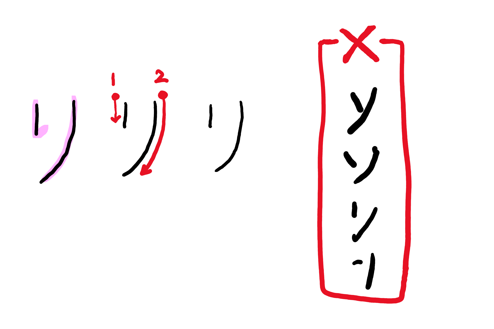

Can you read ツ ･ シ ・ ン ・ ソ ・ リ ❓
Follow 3 steps so that you will be able to read and write ツ ･ シ ・ ン ・ ソ ・ リ correctly every time you see and write them!
Step1 >>> Learn how to recognaize them.
Step2 >>> Check for your understanding.
Step3 >>> Test yourself.
Step1 Learn how to recognaize them.
shi:し、シ
Stroke: 3 Top to bottom
The 3rd stroke;from bottom to top with curve.
Compare the letters in box-X.They are not シ.
tsu:つ、ツ
Stroke: 3 Left to right
The 3rd stroke;from top to bottom with curve.
Compare the letters in box-X.They are not ツ.
N:ん、ン
Stroke: 2 Top to bottomt
The 2nd stroke;from bottom to top with curve.
Compare the letters in box-X.They are not ン.
so:そ、ソ
Stroke: 2 Left to right
The First stroke:a littke angled,the 2nd strok;from top to bottom with curve.
Compare the letters in box-X.They are not ソ.

ri:り、リ
Stroke: 2 Left to right
The First stroke: straight down, The 2nd stroke;exact same line as hiragana-ri(り).
Compare the letters in box-X.They are not リ.
Compare all
When you see typed katakanaシツンソリ, they look almost the same.Study the differenc and make a note for yourself.